Midterm Quizzes
Quiz 1
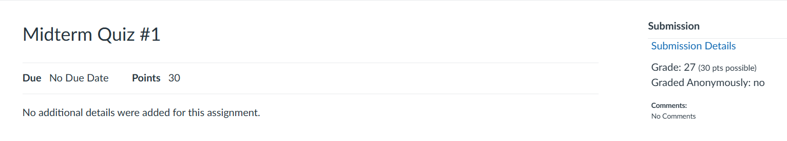
Topic: Lessons 1 - 3 (Introduction to Java, Program Structure, and Operators)
Reflection: This initial assessment tested our foundational understanding of setting up Java environments, standard coding conventions, and basic programming logic.
Quiz 2
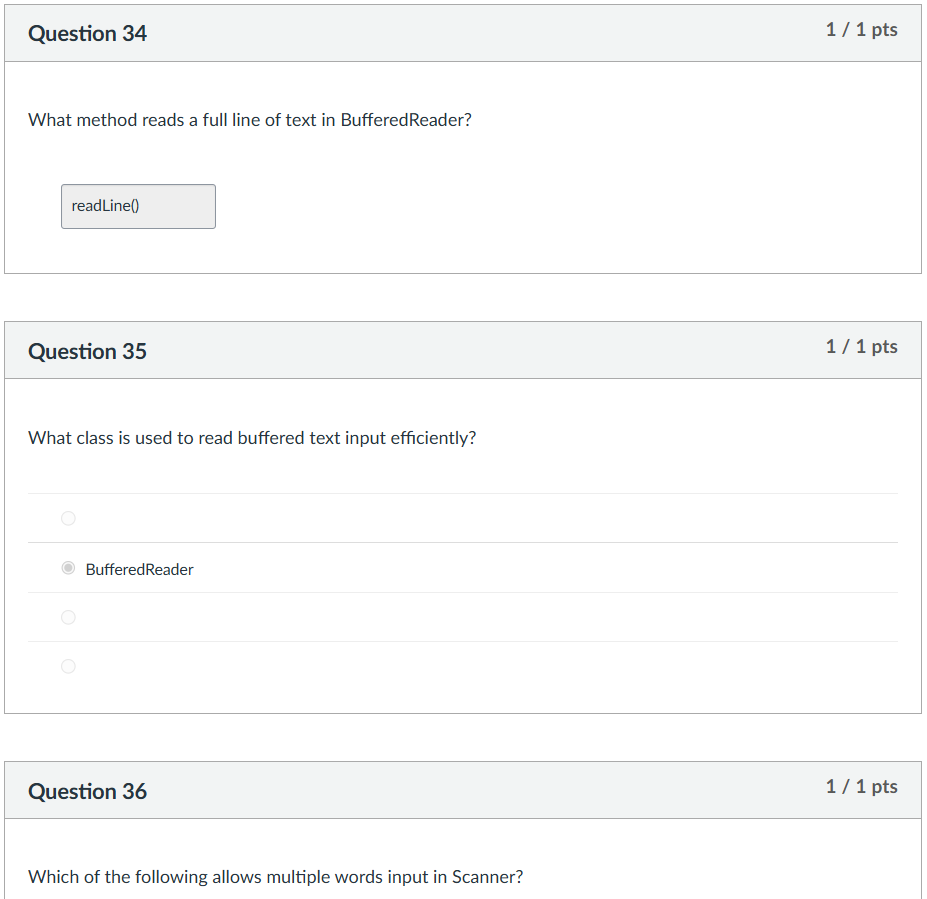
Topic: Lessons 4 - 6 (Java Operators, Control Structures, Methods, and Arrays)
Reflection: This quiz focused heavily on Java's utility classes. It required an understanding of how to efficiently read user input using BufferedReader and Scanner, and selecting the appropriate methods for string processing.
Midterm Seat Works
Seatwork 1
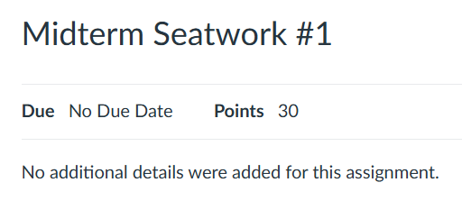
Topic: Java Operators
Reflection: For this seatwork, we had to manually track the code to determine if it would print true or false, and logically solve for the final values of the variables.
Seatwork 2
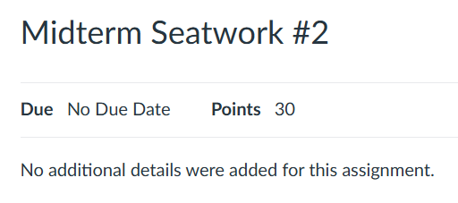
Topic: User Input
Reflection: This covered BufferedReader, Scanner, and Console. We mainly focused on the Scanner class for this activity and were challenged to finish the program in only 30 minutes.
Seatwork 3: Grade Evaluator
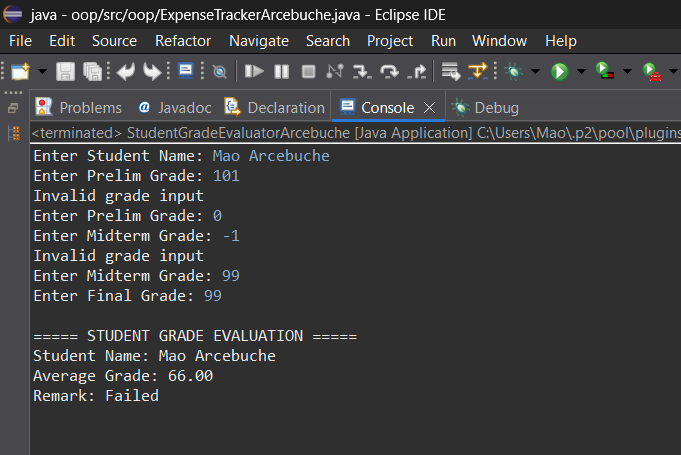
Explanation: Program to compute average and remark. Utilized methods for modularity.
Learnings: Separating logic into modular methods (computeAverage) makes the code reusable and clean.
package oop;
import java.util.Scanner;
public class StudentGradeEvaluatorArcebuche {
public static double computeAverage(double p, double m, double f) {
return (p + m + f) / 3;
}
public static String determineRemark(double average) {
if (average >= 90 && average <= 100) {
return "Excellent";
} else if (average >= 80) {
return "Very Good";
} else if (average >= 75) {
return "Good";
} else {
return "Failed";
}
}
public static void main(String[] args) {
Scanner input = new Scanner(System.in);
double prelim, midterm, finals;
System.out.print("Enter Student Name: ");
String name = input.nextLine();
do {
System.out.print("Enter Prelim Grade: ");
prelim = input.nextDouble();
if (prelim < 0 || prelim > 100) System.out.println("Invalid input");
} while (prelim < 0 || prelim > 100);
do {
System.out.print("Enter Midterm Grade: ");
midterm = input.nextDouble();
if (midterm < 0 || midterm > 100) System.out.println("Invalid input");
} while (midterm < 0 || midterm > 100);
do {
System.out.print("Enter Final Grade: ");
finals = input.nextDouble();
if (finals < 0 || finals > 100) System.out.println("Invalid input");
} while (finals < 0 || finals > 100);
double average = computeAverage(prelim, midterm, finals);
String remark = determineRemark(average);
System.out.println("\n===== STUDENT GRADE EVALUATION =====");
System.out.println("Student Name: " + name);
System.out.printf("Average Grade: %.2f%n", average);
System.out.println("Remark: " + remark);
input.close();
}
}Midterm Activities
Activity 1: Operators
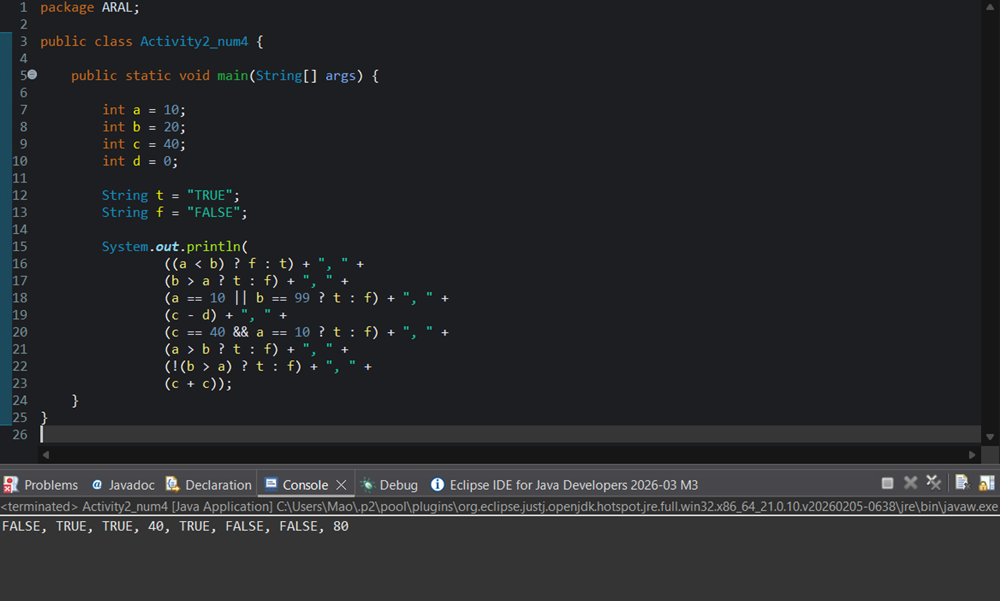
Explanation: Review of logical and ternary operators.
Learnings: Mastered evaluating complex boolean expressions and utilizing ternary operators to write more concise conditional logic.
package ARAL;
public class Activity2_num4 {
public static void main(String[] args) {
int a = 10, b = 20, c = 40, d = 0;
String t = "TRUE", f = "FALSE";
System.out.println(
((a < b) ? f : t) + ", " +
(b > a ? t : f) + ", " +
(a == 10 || b == 99 ? t : f) + ", " +
(c - d) + ", " +
(c == 40 && a == 10 ? t : f) + ", " +
(a > b ? t : f) + ", " +
(!(b > a) ? t : f) + ", " +
(c + c));
}
}Activity 2: Memory Management
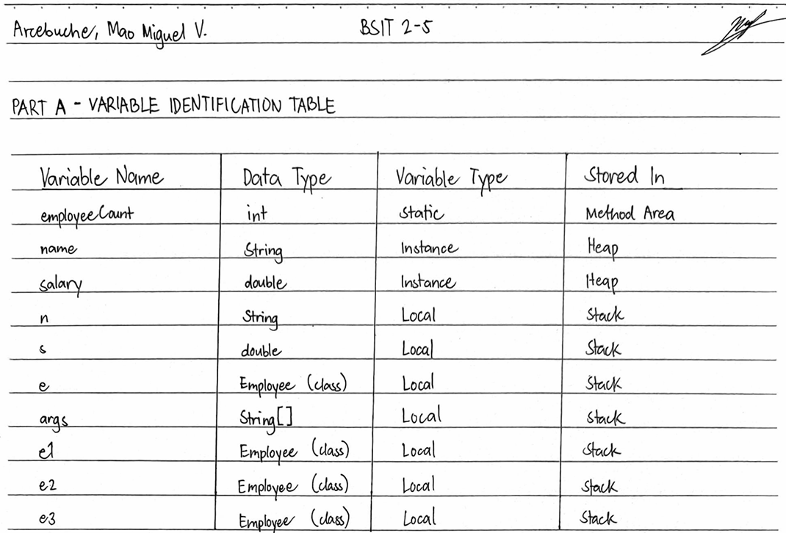
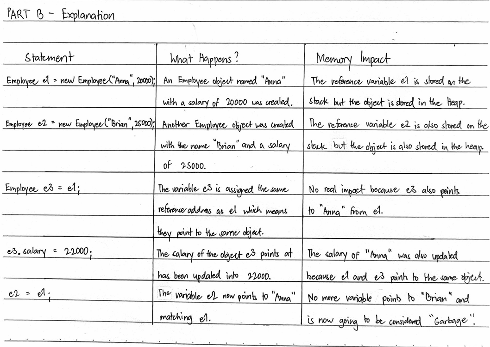
Explanation: Analyzed Heap vs Stack allocation in Java.
Learnings: Gained a clear understanding of how Java manages memory, specifically how objects are stored dynamically in the Heap while reference variables reside in the Stack.
Activity 3: Basic ATM System
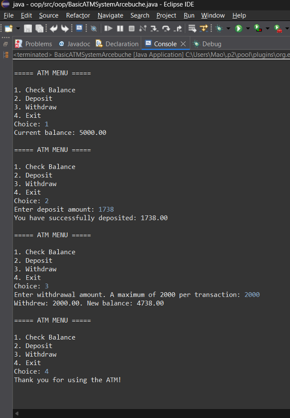
Explanation: Simulated ATM interface using logic loops.
Learnings: Learned to implement robust do-while loops paired with switch statements to create an interactive, continuous user menu.
package oop;
import java.util.Scanner;
public class BasicATMSystemArcebuche {
public static void main(String[] args) {
Scanner input = new Scanner(System.in);
double balance = 5000.00;
int choice;
do {
System.out.println("\n===== ATM MENU =====\n");
System.out.println("1. Check Balance\n2. Deposit\n3. Withdraw\n4. Exit");
System.out.print("Choice: ");
choice = input.nextInt();
input.nextLine();
switch(choice) {
case 1:
System.out.printf("Current balance: %.2f%n", balance);
break;
case 2:
System.out.print("Enter deposit amount: ");
double deposit = input.nextDouble();
if (deposit > 0) {
balance += deposit;
System.out.printf("Deposited: %.2f%n", deposit);
} else System.out.println("Invalid amount.");
break;
case 3:
if (balance <= 0) {
System.out.println("Insufficient funds."); break;
} else {
double withdraw;
do {
System.out.print("Enter withdrawal (Max 2000): ");
withdraw = input.nextDouble();
if(withdraw < 1 || withdraw > 2000 || withdraw > balance) {
System.out.println("Invalid amount.");
}
} while (withdraw < 1 || withdraw > 2000 || withdraw > balance);
balance -= withdraw;
System.out.printf("New balance: %.2f%n", balance);
}
break;
case 4: System.out.println("Thank you!"); break;
default: System.out.println("Invalid choice.");
}
} while(choice != 4);
input.close();
}
}Activity 4: Enrollment System
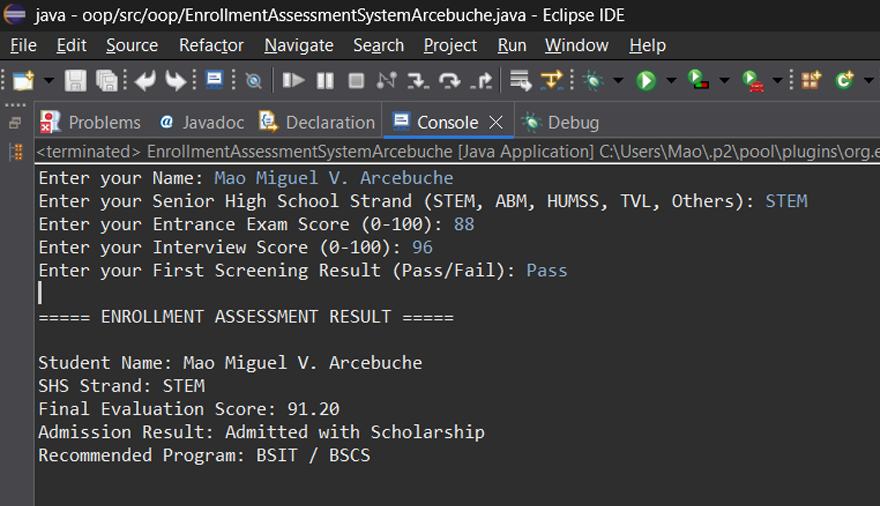
Explanation: Admissions logic based on strand and scores.
Learnings: Improved logical structuring by using nested if-else conditions and validating string inputs with the .equalsIgnoreCase() method.
package oop;
import java.util.Scanner;
public class EnrollmentAssessmentSystemArcebuche {
public static void main(String[] args) {
Scanner input = new Scanner(System.in);
System.out.print("Enter Name: ");
String name = input.nextLine();
String strand;
do {
System.out.print("Enter SHS Strand (STEM, etc.): ");
strand = input.nextLine().toUpperCase();
if (!strand.equals("STEM") && !strand.equals("ABM") && !strand.equals("HUMSS")) {
System.out.println("Try again.");
} else break;
} while (true);
// ... abbreviated input logic ...
double finalScore = (examScore * 0.60) + (interviewScore * 0.40);
String status, program;
if ( screeningResult.equalsIgnoreCase("Pass") ) {
if(finalScore >= 85) status = "Scholar";
else if (finalScore >= 75) status = "Admitted";
else status = "Not Qualified";
} else status = "Not Qualified";
switch (strand.toUpperCase()) {
case "STEM": program = "BSIT / BSCS"; break;
default: program = "General Program"; break;
}
System.out.println("\n===== RESULT =====");
System.out.println("Name: " + name);
System.out.println("Score: " + finalScore);
System.out.println("Admission: " + status);
System.out.println("Recommended Program: " + program);
input.close();
}
}Activity 5: Expense Tracker
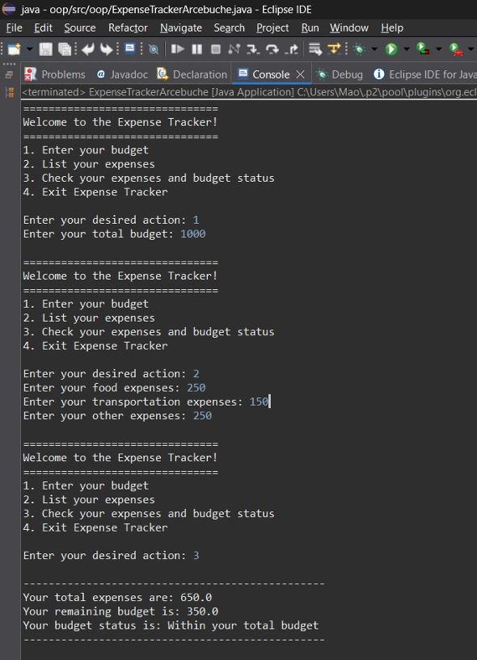
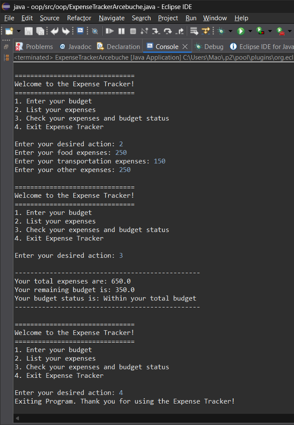
Explanation: Comprehensive budgeting tool using custom methods.
Learnings: Realized the efficiency of modular programming by building custom methods to handle mathematical calculations and repetitive validations, keeping the main method clean.
package oop;
import java.util.Scanner;
public class ExpenseTrackerArcebuche {
public static void displayProgramTitle() {
System.out.println("===============================");
System.out.println("Welcome to the Expense Tracker!");
System.out.println("===============================");
}
public static double calculateTotalExpense(double food, double transpo, double others) {
return food+transpo+others;
}
public static String checkBudget(double expense, double budget) {
if (expense > budget) {
return "Exceeds your total budget";
} else {
return "Within your total budget";
}
}
public static void displayTotalExpenseAndBudget(double expense, double budget, String budget_status) {
System.out.println("Your total expenses are: " + expense);
System.out.println("Your remaining budget is: " + budget);
System.out.println("Your budget status is: " + budget_status);
}
public static double getValidValue(Scanner input, String enter) {
double value;
do {
System.out.print(enter);
value = input.nextDouble();
if (value < 0) System.out.println("You cannot enter negative values.");
} while (value < 0);
return value;
}
public static void main(String[] args) {
//prep
Scanner input = new Scanner(System.in);
int choice;
double budget = 0;
double food = 0;
double transportation = 0;
double other_expenses = 0;
double amount;
double total_expenses;
double remaining_budget;
String budget_status;
do {
displayProgramTitle();
System.out.println("1. Enter your budget");
System.out.println("2. List your expenses");
System.out.println("3. Check your expenses and budget status");
System.out.println("4. Exit Expense Tracker");
System.out.print("\nEnter your desired action: ");
choice = input.nextInt();
if (choice < 1 || choice > 4) {
System.out.println("Invalid choice. Please try again\n");
continue;
}
switch (choice) {
case 1:
budget += getValidValue(input, "Enter your total budget: ");
System.out.println("");
break;
case 2:
food += getValidValue(input, "Enter your food expenses: ");
transportation += getValidValue(input, "Enter your transportation expenses: ");
other_expenses += getValidValue(input, "Enter your other expenses: ");
System.out.println("");
break;
case 3:
System.out.println("\n------------------------------------------------");
total_expenses = calculateTotalExpense(food, transportation, other_expenses);
budget_status = checkBudget(total_expenses, budget);
remaining_budget = budget - total_expenses;
displayTotalExpenseAndBudget(total_expenses, remaining_budget, budget_status);
System.out.println("------------------------------------------------\n");
break;
case 4:
System.out.println("Exiting Program. Thank you for using the Expense Tracker!");
break;
}
} while(choice != 4);
input.close();
}
}Midterm Exam
Exam Summary & Methods

Summary: The Midterm Exam provided a thorough assessment of my OOP knowledge. It covered the history and syntax of Java, various operators, processing user input via the Scanner class, and implementing custom, user-defined methods.
Reflection: This exam challenged me to combine logical problem-solving with the foundational programming structures learned so far, specifically how to design methods that handle input parameters and return crucial results like averages and remarks based on specific logical conditions.
/**
* User-defined method to calculate average.
* Takes in 3 double variables, and returns the calculated average.
*/
public static double solveAverage(double prelim, double midterm, double finalGrade) {
return (prelim + midterm + finalGrade) / 3.0;
}
/**
* User-defined method to give a remark based on average.
* @param average The student's average grade.
* @return String remark ("Excellent", "Great", "Fair", or "Failed")
*/
public static String giveRemark(double average) {
if (average >= 90 && average <= 100) {
return "Excellent";
} else if (average >= 80 && average <= 89) {
return "Great";
} else if (average >= 75 && average <= 79) {
return "Fair";
} else {
return "Failed";
}
}